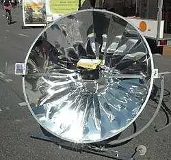
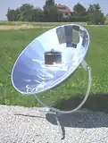
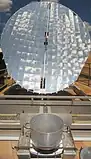
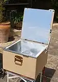
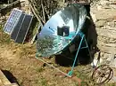
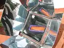
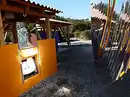
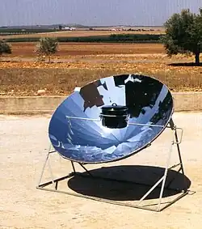
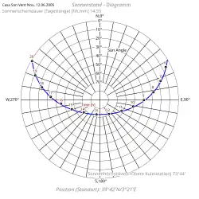
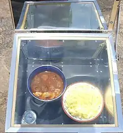

Solarkocher

Ein Solarkocher ist eine Vorrichtung, um aus der Energie der Sonnenstrahlung Wärme zum Kochen zu erzeugen. Die Einstrahlung wird im Brennpunkt eines Hohlspiegels gebündelt.
Aufbau
Der Parabolspiegel konzentriert Sonnenstrahlen auf einen meist mattschwarzen Behälter im Brennpunktbereich. Der Behälter absorbiert Sonnenstrahlen, so dass sein Inhalt stark erhitzt wird. Der Solarkocher eignet sich beispielsweise zum Abkochen von Wasser, zum Erwärmen von Speisen, zum Kochen, Braten, Backen, Grillen oder Frittieren, zur gewerblichen Nutzung in Färbereien, zur Seifenherstellung, Saftproduktion, Aufbereitung von Naturfasern für Flechtarbeiten oder als kleine Garküche unter freiem Himmel.
Ausführungen
Es gibt verschiedene Bauformen von Solarkochern. Ein Solarkocher kann aus einem oder mehreren meist gekrümmten Spiegeln bestehen. Der Spiegel kann aus poliertem Aluminiumblech, verspiegelter Folie oder zum Beispiel auch metallkaschiertem Karton hergestellt werden. Im Brennpunkt befindet sich oft eine Halterung für einen Topf. Um der Sonne folgen zu können, sind Spiegel und Halterung meist in zwei Achsen schwenkbar gelagert.
Da Solarkocher mit relativ geringem Materialaufwand hergestellt werden können und keinen Brennstoff verbrauchen, werden sie als Lösung vieler Probleme, gerade in ärmeren Regionen der Welt, gesehen. In Regionen mit wenig sauberem Trinkwasser kann ein Solarkocher zur Entkeimung eingesetzt werden.
- Solarkocher

Solarkocher in Betrieb
Scheffler

Solarkocher Alsol
Global Sun Oven
Scheffler-Spiegel mit Sekundärspiegel und stationärer Kochstelle
Seifert SK12
Vorteile
- Unabhängigkeit von herkömmlichen Brennstoffen wie Gas, Kerosin und Brennholz.
- Keine CO2-Emissionen
- Die Gesamttemperatur der Erdatmosphäre erhöht sich – anders als beim Verbrennen von Brennstoffen – nicht.
- Es entstehen beim Kochen keine gesundheitsschädlichen Abgase oder Rauch.
- Die Rüstzeiten für die Inbetriebnahme des Solarkochers sind gering.
- Kein Anbrennen des Kochgutes in solaren Kochkisten, da die Temperatur normalerweise unter 200 °C bleibt. Aus demselben Grund muss das Kochgut nicht umgerührt werden und sollte auch nicht, weil die Kochkisten während der Garzeit möglichst geschlossen bleiben sollten.
- Indirekte Vorteile gegenüber dem offenen Herdfeuer
- Der Baumbestand kann geschont werden. Auch Tierdung wie etwa Kuhdung (welcher in vielen Gebieten der Erde getrocknet als Heizmaterial dient) muss nicht mehr verbrannt werden, sondern dient der Landwirtschaft.
- Das tägliche Holzsammeln verkürzt sich oder entfällt, was vor allem Kinder und Frauen entlastet.
Nachteile
- Hundertprozentige Abhängigkeit vom Sonnenschein. Scheint die Sonne nicht, ist Kochen unmöglich.
- Auch wolkenverhangener Himmel oder zu niedriger Sonnenstand erschweren das Kochen oder verhindern dies ganz.
- Die Anwendung lohnt sich bei zu wenig oder zu kurzem Sonnenschein (z. B. am Abend) kaum. Dies ist jedoch nur von Bedeutung, wenn keine Möglichkeit besteht, den Kochvorgang rechtzeitig vor Sonnenuntergang zu beginnen.
- Insbesondere Kocher mit Spiegeln müssen dem Sonnenstand häufig nachgeführt werden, Kochkisten wesentlich seltener.
- Das Kochen mit dem Solarkocher muss praktisch immer im Freien erfolgen. Wegen des Windes dauert es meist länger und ist schwieriger zu timen als mit Gas- oder Elektroherden. Nur beim Parabolkocher (ab 1,4 Meter Reflektordurchmesser) werden vergleichbare Kochzeiten erzielt. Solare Kochkisten können bereits morgens in einer entsprechenden Richtung aufgestellt werden, so dass das Essen abends fertig ist.
- Oft müssen Kochgewohnheiten verändert werden, was die Akzeptanz von Solarkochern einschränken kann.
- Solare Kochkisten sind wegen der niedrigen Gartemperatur für bestimmte Speisen ungeeignet, z. B. für Nudeln und zum Grillen bzw. krossen Braten.
- Die Kosten für Solarkocher (besonders von Spiegelkochern) sind auch bei lokaler Fertigung meist so hoch, dass sie für Arme unerschwinglich sind und energieeffiziente Herde meist die bessere Alternative darstellen.[1]
Untersuchungen haben gezeigt, dass Solarkocher in der Regel nur etwa 30 bis 40 % des Brennholzes einsparen können. Dies ist weniger als verbesserte Kochherde leisten, die 50 % und mehr einsparen. Dennoch könnten sie evtl. als zusätzliche Technologie zur Energieeinsparung eingesetzt werden. Mittlerweile sind auch günstige Solarkocher erhältlich[2], die anderen Nachteile bestehen jedoch weiterhin.
Hinweise zur Verwendung und Kochdauer

Ein Solarkocher mit einem Durchmesser von 1,40 Metern erreicht ohne weiteres eine abgegebene Leistung von rund 750 Watt. Bei guter Sonneneinstrahlung kochen drei Liter Wasser in 25 Minuten. Mattschwarze Behälter absorbieren die Sonnenstrahlen am besten und beschleunigen so den Kochvorgang zusätzlich. Ein Deckel in derselben Farbe kann die Erhitzung außerdem beschleunigen.
Mit einem Kocher können bis zu 20 Personen versorgt werden, wenn er unter Verwendung eines 12-Liter-Topfes betrieben wird.
Der Kocher arbeitet ab einer Stunde nach Sonnenaufgang bis eine Stunde vor Sonnenuntergang. Aufgrund seiner hohen Leistung ist er sogar bei verhältnismäßig kurzer direkter Einstrahlung wirkungsvoll.
Einmal angekochtes Essen kann in einem Warmhaltekorb auch weitergaren. Dies geht zum Beispiel mit Reis, weswegen der Solarkocher auch oft umgangssprachlich Reiskocher genannt wird.
Bei einer Brennweite unter 30 Zentimetern muss der Spiegel alle 15 bis 25 Minuten neu auf den Sonnenstand ausgerichtet werden. Das Nachführen geschieht mit einfachen Handgriffen. Der Brennbereich liegt innerhalb des Spiegels, somit wird Verbrennen und Blenden weitgehend vermieden. Zum Bearbeiten (umrühren, befüllen usw.) sollte der Reflektor jedoch immer so geschwenkt werden, dass der Behälter (Topf) sich auf der Schattenseite befindet.
Solarkochkiste

Eine Sonderform des Solarkochers ist die Solarkochkiste. Dabei handelt es sich um eine innen mit Blech ausgeschlagene gedämmte Holzkiste mit einem Isolierglasfenster als innerem Deckel und einem darüber montierten äußeren Deckel mit Sonnenspiegel. Dieser ist ein auf der Unterseite mit Alufolie bespannter Deckel zum Reflektieren der Sonnenstrahlen ins Innere der Kiste. Er ist an einer der oberen Längsseiten der Kochkiste mit Scharnieren befestigt, um schwenkbar und damit dem jeweiligen Sonnenstand anpassbar zu sein. Das Blech, mit dem die Kiste ausgeschlagen ist, sollte noch mit einer ungiftigen, geschmacksneutralen Farbe schwarz eingefärbt werden, um eine Reflexion der Sonnenstrahlen zu reduzieren und damit einen möglichst hohen Anteil an Wärmeenergie zum Kochen zur Verfügung zu haben. Der innere Isolierglas-Deckel der Kochkiste lässt die Wärmestrahlung hinein, aber keine erwärmte Luft wieder heraus. Dies macht die Solarkochkiste zu einem (abgesehen von ihrer Herstellung, bzw. der ihrer Komponenten) ausgesprochen günstigen, ökologisch sinnvollen Herd, der gerade für ohnehin holzarme Entwicklungsländer interessant sein könnte.[3] Die Solarkochkiste wurde im Jahr 1767 von Horace Bénédict de Saussure erfunden.[4]
Ein Solarofen ist eine Vorrichtung zur Erzeugung von Wärme mittels Sonneneinstrahlung unter Verwendung unterschiedlicher Spiegelkonstruktionen. Solaröfen existieren in verschiedenen Bauformen, meistens jedoch in Kistenform.[5]
Einsatz
Der Solarofen ist ein meist transportables Gerät zum Erhitzen, Backen oder Kochen von Speisen und Getränken. Die kleineren Modelle werden vorwiegend zur Zubereitung des Proviants bei Wanderungen, Trekkingtouren, Expeditionen oder längeren Aufenthalten in freier Natur benutzt. Die größeren Solaröfen werden in sonnenreichen Ländern genutzt, um Einkommen zu erzielen, indem Brot und Kuchen gebacken wird oder Erdnüsse geröstet und verkauft werden, als Erfolgsprojekte zählen heute vor allem solarbeheizte Großküchen. Z. B. kann in der größten Solarküche der Welt in Abu Road, Rajasthan (Indien), für bis zu 18.000 Besucher eines Yoga–Zentrums solar gekocht werden.[6] Solarkocher eignen sich auch gut, um Kindern zu verdeutlichen, wie hoch die Strahlungsleistung der Sonne ist.
Leistung
Alle Angaben beziehen sich auf eine Einstrahlung von 1 kW/m2 bei klarem Himmel und optimaler Anstellung der Reflektoren.
Da auf Glasplatte und Reflektor die Sonne direkt einstrahlt (zum Beispiel 665 Watt), liegt der errechnete Wirkungsgrad bei rund 37 %, die restlichen 63 % gehen durch Teilabschattung des Kochraums, Konvektion, Verdunstungskälte, Absorption und Reflexion verloren. Bei Verwendung von hochwertigen Spiegeln (zum Beispiel eloxiertem Aluminiumblech) werden 95 % der Strahlung reflektiert, bei Verwendung von Alufolien dagegen nur 50 %. Der Kocherraum überschreitet im Leerlauf, d. h. ohne Kochgut, innerhalb von 2 bis 3 Minuten die 100 °C-Marke.
Gefahren
- Der Solarofen erreicht im Leerlauf Temperaturen zwischen 140 und 205 °C.
- Es ist darauf zu achten, dass Topflappen oder isolierende Handschuhe benutzt werden, um Verbrennungen zu vermeiden.
- Die Augen dürfen nicht in den Reflexionsweg oder den Fokussierungsbereich geraten, um Blendgefahr auszuschließen.
- Beim Öffnen muss damit gerechnet werden, dass dem Kochraum heißer Wasserdampf entweicht. Der benutzte Behälter sollte nicht fest verschlossen sein, so dass Dampf entweichen kann.
Ähnliche Geräte
- Solarschmelzofen – nach demselben Prinzip arbeitender Schmelzofen
- Sonnendörrer – solarbetriebener Dörrofen
- Sonnenkollektor – nutzt Sonnenwärme ohne Fokussierung, erreicht aber ähnlich hohe Temperaturen
Literatur
- Erdem Cuce, Pinar Mert Cuce: A comprehensive review on solar cookers. In: Applied Energy 102, (2013), 1399–1421, doi:10.1016/j.apenergy.2012.09.002.
- Rolf Behringer, Michael Götz: Kochen mit der Sonne, solar kochen und backen in Mitteleuropa. Ökobuch, Staufen bei Freiburg im Breisgau 2008, ISBN 978-3-936896-39-8.
- Ursula Bremm-Gerhards: Chancen solarer Kochkisten als angepasste Technologie in Entwicklungsländern, Fort Lauderdale – Breitenbach, Saarbrücken 1991, ISBN 3-88156-521-3.
- Torsten Schneider: Kochen mit der Sonne: Konzeption eines einfachen Solarkochers und Durchführung eines Baukurses. diplomica, Hamburg 2011, ISBN 978-3-86341-088-9.
Weblinks
- The Solar Cooking Wiki (mit Übersetzung ins Deutsche)
- Solar Ovens and Solar Cooking, Library of Congress, Selected Resources
- Sendung mit der Maus – Solarofen im Selbstbau (LEIFI)
- Bau von Solarkochern
- Bauanleitungen in Deutsch, English und Spanisch
Einzelnachweise
- ↑ Die Sonne bringt es an den Tag. (PDF; 1,9 MB) GTZ, abgerufen am 9. Juli 2009.
- ↑ Kochen im Karton. TAZ, abgerufen am 9. Juli 2009.
- ↑ Herstellung einer Kochkiste
- ↑ Ken Butti: Horace de Saussure and his Hot Boxes of the 1700s. Solar Cooking Archive, Solar Cookers International (Sacramento, California), abgerufen am 30. Mai 2012.
- ↑ Solarofen
- ↑ www.solare-bruecke.org: Solar beheizte Großküchen mit Dampf als Wärmeträger, abgerufen am 9. März 2011.
- Gargerät
- Wärmeerzeuger
- Solarthermie